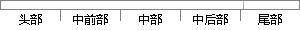

另一个需要讨论的参数是3.
片段位置图

相似结果|
相似片段 1：的操作，而保留另一个编辑操作。3． 根据给定的坐标增量移动要素Move，下面依次讨论该操作与编辑操作集合中的元素发生并发时冲突判断和取舍情况：1) 移动Move，需要根据操作的参数来确定是否冲突。如果
相似片段 2：是困难和费时的。因此，这种访问形式的耦合程度也非常大，仅次于属性耦合的耦合程度。3．控制耦合若两个方法只通过参数进行交互，但是其中的某个方法的输出值，会直接影响到另一个方法执行路径，则这个访问称为控制
相似片段 3： sort() 即可显示出此时容器只容纳实现了 Comparable接口的对象 并且正是 sort()方法的需要才使用该接口来限制能容纳的对象的类型 例 3. 受限类型参数 class
相似片段 4：信息；2．提供各个agent携带的可交换的信息种类和数量；墨凹至 丝竺!量重塑!墨堂翌坌耋量堕壅3．提供可收集信息的种类、地点、数量；4．2．3游戏设计在游戏设计中用到几个参数需要说明。在系统中用
相似片段 5：，而当交替处理它们的时候会使后面在用n元函数替换艿子式中的约束变量时产生大量的参数，进而使后续对每一枝的各子式进行一致性检测时需要测试大量的参数，增加了工作量也增大了程序的复杂度。所以这一节讨论一种
|
※ 片段修改建议 ※
近似词参考：- 需要：必要
- 讨论：会商 计议 接洽 接头 评论辩论
系统自动生成语句：另一个必要会商的参数是3.
注：本片段修改建议为系统自动生成，仅供参考。